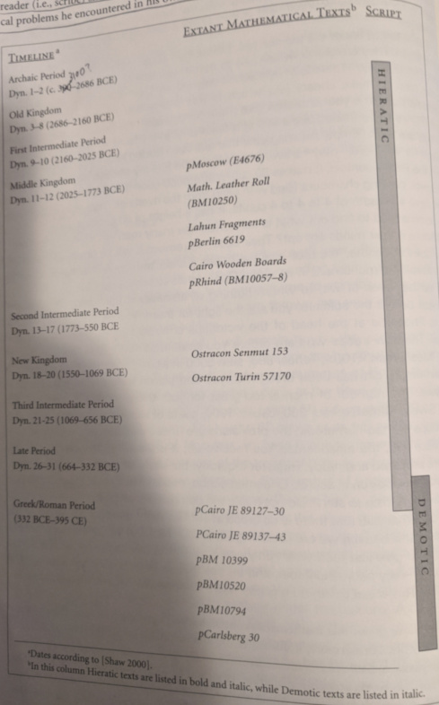
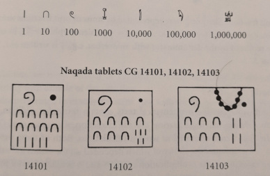

Mathematics grew up mainly with administrative needs. Quantification and recording of goods also necessitated metrological systems. (Measurement systems) Most evidence for mathematical techniques come from education and daily lives of scribes. There is some later and less common evidence of the use of mathematics in architecture.
One fun example is a debate between two scribes, Hori and Amenemope (Mapu for short). They bickered bitterly, one charged with leading a team of workers to dig a lake and demanding calculations from the other.
Below is a table of dynasties and corresponding found scripts.

Below is a sample of Egyptian numerals. The dot in the upper-right just represents a hole in the tablets that was not a symbol. The left-most tablet shows 100+80+5, where the symbol for 100 is written backwards as some writers did.
